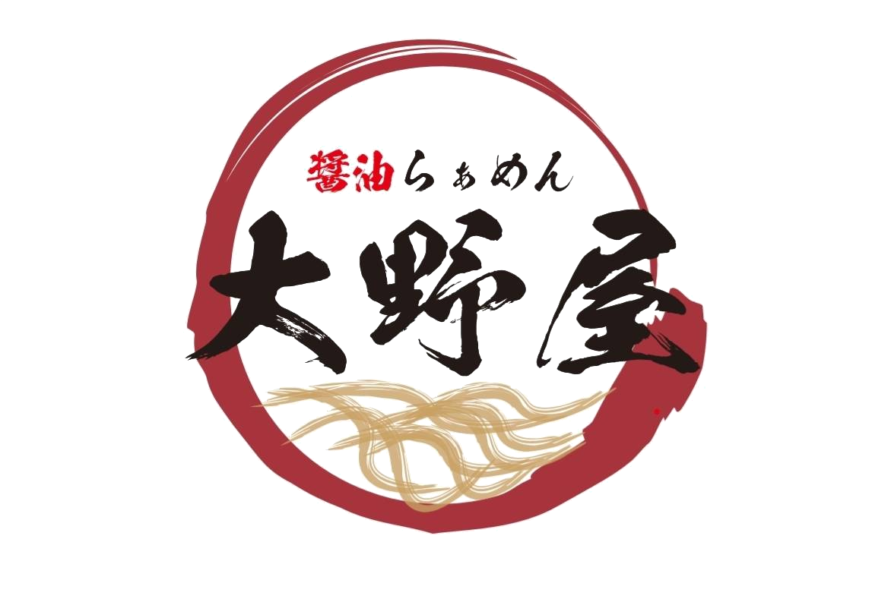
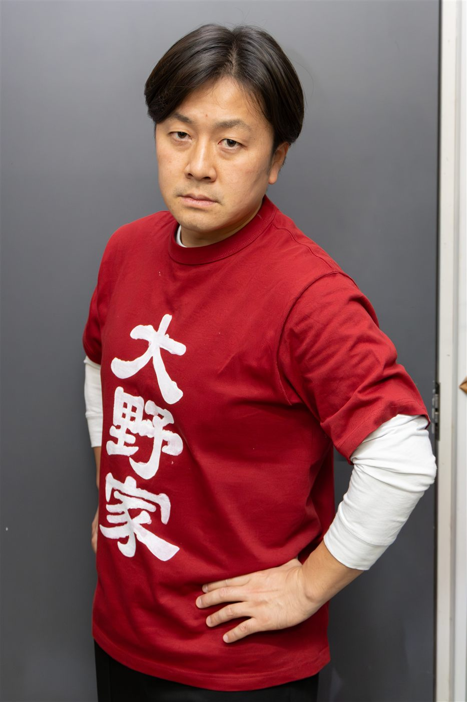

らーめん 大野家醤 油 ら ぁ め ん 専 門 店
湯気の向こうに、あの一杯を。
育英祭出店・醤油らーめん専門店「大野家」
ABOUT
前年度は900杯を超える醤油らーめんをご提供し、大きな反響をいただきました。 本年度はスープの品質・提供スピードをさらに磨き上げ、目標1000杯へ挑戦します。
※ 資材の関係上、状況により一時的に販売を取りやめる場合がございます。あらかじめご了承ください。
FIVE RULES
こだわりのスープは最後まで味わうべし
試作と幾度もの飲み比べを経て辿り着いた、心をこめた一杯。厳選した素材が織りなす、深い旨みをご堪能あれ。
らーめんは“熱”が命。写真は一瞬で済ませるべし
湯気立つ瞬間こそ、旨みの頂点。熱々の一杯に向き合う、その一瞬が味を決める。
店主の等身大パネルと記念撮影すべし
店主と並べるのは、今だけ。この二日間の思い出を、一枚に残そう。
※天候により、パネルの設置を取りやめる場合があります。
店主の一杯に、敬意を払うべし
湯切り、盛り付け、その一手間すべてに、店主の美学が宿る。
「ごちそうさま」を忘れるべからず
二日間の感謝を、一言に込めて。店主の笑顔は、その一言で決まる。
OWNER

大野家 店主
SHOP MASTER
育英祭にかける想いはらーめん一杯に込めて。湯切りから盛り付けまで、 すべての一手間に店主の美学が宿ります。会場では等身大パネルとの記念撮影も、この二日間限定でお楽しみいただけます（天候により中止の場合あり）。
スタッフ一同、心を込めて最高の一杯をお届けします。ぜひテントまでお越しください。
ACCESS
サレジオ工業高等専門学校
育英祭 会場内「サレジアンモール」（外テント）